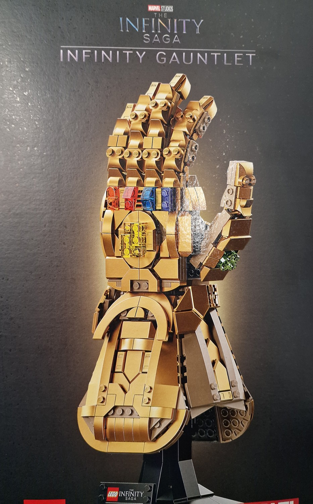

DDD North 2022

This article was originally published 4th December 2022 on Linkedin
DDD North was held at the University of Hull on 3rd December 2022 and attracted speakers and attendees from all around the country with sessions covering a wide variety of subjects along with an opportunity to network with each other and was great to travel down to the event to attend!
Modern .NET and WPF - Peter Bull
I've been a developer for twenty years using .NET and professionally write client applications for a variety of companies and personally write my own tutorials, talks, workshops and software including packages and can find me anywhere as @RoguePlanetoid and Modern .NET and WPF was my talk at DDD North about using the latest .NET with WPF or Windows Presentation Foundation.
.NET
.NET was first released back in 2002 and 2022 is the twentieth anniversary of .NET, which is a free developer platform, which has been open source since 2016. .NET 7 is the latest version of .NET released in November 2022. There is a major .NET version every year with even-numbered releases supported for three years and odd-numbered ones for one year. You can build apps for Web, Android, iOS, macOS, Linux and Windows.
Web Applications
ASP.NET is the framework for building web apps in C# using .NET, it is fast and scalable supporting over 7 million requests per second, compared to Java Servlet's two million requests per second and Node.js half a million. ASP.NET web apps can be created with MVC or Model View Controller with views using Razor and HTML or can use Razor Pages for modern web apps. You can also create REST APIs and take advantage of minimal APIs for a smaller implementation.
Blazor allows you to create client web apps using C# and .NET and create web interfaces without JavaScript, but can use JavaScript APIs or libraries when needed. Blazor can run client side using WebAssembly or server side by using SignalR to update the UI. Blazor Web components can be brought to applications with Blazor Hybrid in .NET MAUI or to modernise Windows Forms and Windows Presentation Foundation apps.
Cross-Platform Applications
Avalonia allows you to create high-fidelity experiences with C# and XAML with this third-party platform by leveraging existing WPF skills and create them using Visual Studio or in JetBrains Rider. You can create apps for macOS, Linux, Raspberry Pi, Web Assembly, iOS, Android or Desktop on Windows 10 or 11 with some experimental support for Windows 7.
Uno Platform allows you to create pixel-perfect multi-platform apps with C# and XAML for WinUI with this third-party platform and leverage existing skills such as those from the Universal Windows Platform to create more modern applications with WinUI and bring them cross platform. You can use Visual Studio, Visual Studio Code and JetBrains Rider and target major operating systems such as macOS, iOS, Android, Linux or Windows 10 and 11 with WinUI or WPF for Windows 7 or modern browsers.
.NET MAUI is the newest addition to the .NET ecosystem and is the successor to Xamarin to create native applications of hybrid experiences using Blazor and target Android, iOS, macOS and Windows 10 and 11.
Windows Applications
Windows App SDK is the next evolution of the Windows application development platform, it is the successor to Universal Windows Platform, you can build native apps for Windows 11 and down-level to Windows 10 1809, it has regular updates not tied to operating system releases and leverages the latest platform and design features with WinUI with the latest version of the Windows App SDK 1.2 released in November 2022.
Windows Forms started back in 2002 but was made open-source in 2018 and you can build fully native applications for Windows or create hybrid experiences with Blazor, you can create applications for the latest version of Windows or for older versions of Windows.
Windows Presentation Foundation started in 2006 and modern .NET supports WPF where you can build native applications or create hybrid experiences with Blazor. WPF supports the breadth and depth of Windows platform features but with separation of code between XAML and C# it would be possible to migrate to something like Uno Platform in the future as features / requirements mature.
Demo
A simple desktop notes application written in WPF was then shown off which supports data binding of XAML, as well as more modern features such as modern UI styles thanks to the work of other developers and many more modern .NET features. This included showing off Blazor Hybrid being used, but also more unexpected combinations such as the application service not only its own ASP.NET Minimal API but also a full Razor Pages experience, which also supported rendering of Windows Presentation Foundation components and a stand-alone Razor Pages example was also shown with the same functionality.
You can download the demo and slides for my talk from github.com/RoguePlanetoid/moderndotnetandwpf.
The Forgotten Users of a Website - Rachel Breeze
Rachel Breeze is a senior backend developer and technical squad lead for Nexer Digital as well as being an Umbraco MVP.
High Level Requirements
Shopping site, list, add, check out thanks, branding accessibility, environments, security and deployment.
Touch Points
Involve visiting website, emails as well as other ways people will get something from your website.
What is the first time someone will interact with any part of your website, app and service e.g. Letter, link in the footer of an email, social media, search engine, recommendation as well as CMS user, client testing, quality assurance, developer, data analyst, hacker, design, research, idea.
Ecosystem
A website is part of a service, even if all you have a brochureware website you will have a telephone number or email address. How do you expand the touchpoints to involve everyone.
Developers
HTML, CSS, Back End Code. Coding standards that help improve readability of code, ensure consistency and cover any aspect of development. How can developers be supported to do their job. Should convention be followed or not - they should be if there is legal compliance, industry standards but then don't follow them when they don't help your team.
Coding Standards e.g. for C that constants should be uppercase, but this can impact people with Dyslexia which can be simulated with Silktide to see what effect this would have. Tabs or Spaces for accessibility, when have spaces would need to go through, but can go through quicker with tabs with a screen reader along with braille readers which would have to occupy many more cells of the reader with spaces than with tabs. For a Headless Application need an API definition for understanding the API and agree error handling with documentation, consistent parameters and improve Swagger API generation. Won't have intellisense for parameters and can't just reorder values so can make sure that the Swagger UI has the documentation and example values so can use the comments along with the Swagger responses along with the GenerateDocumentationFile set to true and then have it include the XmlComments from this file and make sure the parameters are documented correctly.
CMS Users
With Umbraco will be able to preview content and then before build website need to know how to build content, do you want just a preview or in a website that everyone can see, this can help decide how things should be done. Admin of a DXP want to find issues with Integrations so can resolve them. This becomes more complex if have composable DXPs
Referrals
For email, search engines or social media. When rebounding, renaming or deleting need to think about 404, redirects and SEO which content authors need, needs to be thought about by developers with redirect management along with 404 page which could be used for marketing or have a relevant one for the section it is in.
Hackers
Hackers they want data or take site offline or use redirect from a site to them. General approach is threat assessment along with pen testing security coding standards and peer reviews. Software security alerts also need to be checked. When have pen test fix issues and share fixes and update coding standards if needed. There are also dependabot alerts which will also show how to remediate any issues alone with OWASP.
Accessibility
For the front end of the website, some write User stories for this, but Accessibility should be a criteria then they become second nature. People with access needs can be forgotten users of websites. 15% of the population lives with a disability which increases reach if this is considered, why wouldn't you want as many people as possible to be able to use it? Could follow the WCAG which can also help with SEO and WCAG and help make things more perceivable, operable, understandable and robust, the minimum is A but should aim for AA and should meet AAA where possible and for AA you have to be 100% compliant to be compliant. Should start with prototyping to consider Accessibility so need to shift this as far left as possible and can also test HTML, CSS for validation and test interactions, can also use Storybook and Umbraco is using this for their components and can find issues with components. Can also have plugins for automated testing. Should you do manual or automated testing? Automated tools aren't a replacement for manual testing but only when automated tools have passed should manual testing start. Don't fix Accessibility with overlays as users will visit with their preferred technology.
Summary
Website is part of service, review all touchpoints, consider what content authors need and consider Accessibility.
Advent of Code 2022, Day 3 - Live on Stage! - Dylan Beattie
Dylan Beattie before his talk had an amazing musical intro then proceeded to solve day three of the Advent of Code Challenge live on stage, which was amazing to see the problem solving and solution being created with some great interaction from the audience too, along with learning about “Chunk” in LINQ which was one of the suggestions. You can check out the completed code from the session at github.com/dylanbeattie/advent-of-code-2022/tree/main/day3.
Code First AR & VR for .NET Developers - Lee Englestone
Lee Englestone is a Developer Relations Lead at Avanade, wrote a book .NET Developers Guide to Augmented Reality in iOS. Lee spoke about Code First AR and VR for .NET Developers.
Overview
Augmented Reality is where you can see the real world and any apps are superimposed on the real world and can be taken into account and Virtual Reality is where you no longer see the real-world and everything is the program and is fully immersive.
Why Code First?
Already know C# and Visual Studio, may not want to learn Unity and maybe aren't a designer.
AR Kit is Apples AR framework and Xamarin ported ARKit to .NET and can use C# to create AR for iOS. What is Xamarin? Cross platform app development toolkit and allows C# apps to deploy to iOS and Android and was acquired by Microsoft in 2016.
Why ARKit, Xamarin and C# in iOS? Augmented reality gaining popularity, Xamarin cross platform ability to deploy and C# is a popular programming language and iOS has over a billion active devices with ARKit it has many built in capabilities and locally don't need a paid Developer Program just need Mac, Visual Studio for Mac or iOS Device.
iOS ARKit + .NET = Awesome Sauce
ARKit & SceneKit
SceneKit is Apple's 3D graphics framework which helps create 3D animated scenes and effects in your apps, incorporates a physics engine and particle generator, describe scene in terms of geometry.
ASSCNView is a control that enables you to display an AR experience and blends virtual 3D world content with camera view of the world and the view renders the video feed from the device camera as the scene background.
AR Session with AR kit uses invisible anchors to map surroundings but accuracy depends on environment conditions and low light / reflective material = bad.
AR Kit uses 3D coordinate system where X is side to side, Y is up and down and Z is backwards and forwards and the world origin is X: 0, Y:0, Z: 0.
SCNNode has Geometry is the shape of a node, Material is the visual appearance of the node and Physics is the behaviour of the node with many built in geometries that can be used.
Anchors are points of interest in the scene, they can be manually placed or more commonly are automatically detected such as ARPlaneAnchor, ARImageAnchor, ARObjectAnchor and ARFaceAnchor.
What can AR Kit do?
Image Recognition, which can recognised 100 different images and can identify the position of a recognised image and is useful for markers. Object Recognition can “scan” a 3D object and can recognise scanned 3D object. Plane detection can detect horizontal and vertical surfaces where understanding of surfaces increases with more info and can be used for product placement, interior design etc. Touch Gestures can be supported where screen gestures can be translated to AR such as Swipe, Pan, Pinch, Rotate, Tap, Double Tap and Long Press. Face Tracking where can track up to three faces in a scene, is not facial recognition where uses can be for cosmetics or wearables. Facial Expression Detection which can detect over 50 facial movements such as EyeBlinkLeft, MouthClose etc as a floating point from 0 to 1 and is the same technology that the animojis use. Body Tracking can do in real time tracks 12 major joints and can then infer minor joints and could be used for Fashion / Wearables, Healthcare and for Exercise. Lighting which can be used from SceneKit as lighting is important for realism such as artificial light sources and cast artificial shadows. Physics can be used from SceneKit and support Gravity with solid body or collision physics and can apply force, friction and mass. Video and Sound are also supported where can play videos on a plane and can also have Animations where can change opacity, location and scale and can repeat these or support easing and these can be sequenced or grouped.
Code First VR with StereoKit
StereoKit prioritises app development with a mixed reality input system, fast performance, quick iterations, code brevity and built on top of OpenVR and when releases built it does it's own documentation and takes screenshots and supports Oculus Quest, HoloLens amongst others. OpenXR is a cross-platform standard for VR and AR applications to aid with interoperability and is supported by many companies. You can get started with an Oculus Headset then allow USB connections, enable developer mode, run the application and can then have breakpoints or do any debugging and can leave apps on the device. It is a lightweight framework and can have a minimum “Hello Cube” application with just a few lines of code and is built with UI in mind, with support for Windows, Buttons, Text Input, Draw Lines, Draw 3D models and display text with full support for Unicode.
Summary
Code First VR and AR is within your grasp, easy to experiment with and going to be increasingly popular.
Empathy, Sympathy, and Compassion - Jamie Taylor
Jamie Taylor is a .NET Contractor and Podcaster. Jamie spoke about Empathy, Sympathy and Compassion with the key skills that all developers and technologists should have.
Truthy vs Truthful essentially == vs === and going to provide enough information to look up later aka “lies to children”.
Ancient Wisdom - Wonderful teachings exist - the sword is unfathomable by Yamaoka Tesshu.
What is empathy?
Four qualities willing with not for people which is perspective taking, no judgement, recognising the emotions someone has and communicating back to that person with the appropriate emotions. Example - It's dark, I'm overwhelmed. Hey! I know what it's like down here and you're not along is Empathy. To be able to go to users and appreciate where they are coming from when they encounter issues - the user is never at fault.
Empathy is not?
Sympathy, putty or sorry or knowing without caring. Pity is when you acknowledge someone's pain and do nothing about it. Sympathy is when you display pity but hoping that something will change. Put yourself in someone's shoes is empathy.
Sympathy vs Empathy?
Sympathy turns out to be less powerful than empathy - Scott Hershovitz (Nasty, Brutish, and Short). Communicating with someone where you want to do something about it is better than saying something is bad and there's nothing you can do about it.
Empathy is caring
When you care about the person, the user, the human. Start with the why and work backwards, when you understand the goal you want to achieve then you can work out the how. What is the thing the person wants to do, should start there! It is a user story, it is what the person wants to achieve, what is it you are aiming for.
What is compassion?
Compassion is when you have empathy or sympathy and a desire to relieve suffering, something medical professionals do all the time, they take the empathy and desire to relieve suffering path.
Why to we need to do this?
Your code is making somebody cry at three o'clock in the morning because your crappy error handling might jeopardise their entire career. How do you feel about that? - Dylan Beattie. Something that doesn't matter that is small for a developer could ruin the life of a user, you could lose them money or even bring down a government.
Lack of Compassion is baked in
In the 1960s TMRC of MIT who built a model railway and where the term hacking came from as they would hack things together and were found by security and instead of being kicked out the computer science department then work on then top of the range PDP computer and they built the software for this, these were the first computer system admins and they coined the phrase “lusers” with a silent “l” where they would look down on users then flash forward to today through the 80s with the stereotypical nerd but weren't nice to anyone else and now it is “banter” where people make fun of the users. They've walked away from clients who have said something like, they can't be a developer as they are a woman which was unacceptable, there's more demand than supply so the power to walk away is always there.
Words
Words are like shrapnel, they cause a lot of hurt in tiny ways - Robin Ince. Really need to think about the words we are saying.
The user matters
A project with no users is a pointless project - Linus Torvalds
We should treat people as people; not as means to an end - Immanuel Kant
There's no greys, only white that's got grubby… and sin young man, is when you treat people as things” - Terry Pratchett
If something has no users it would be dead as no one would be using it. When you treat a user as something that makes you money and not as a person then that means you don't care about the user.
On Reported Bugs
If we treat people inhumanely, we should never be surprised when they return the favour - Scott Hershovitz (Nasty, Brutish, and Short). Shouldn't blame users when something goes wrong, this is an opportunity to improve, when a problem is reported we shouldn't see it as a personal attack.
On Listening
All criticism, attack, insults, and judgements vanish when we focus attention on hearing the feelings behind a message - Marshall B. Rosenberg. When focus on the feelings can focus on what we need to change to fix it.
Software is a tool
Supposed to help, should reduce complexity, not get in the way, not to cause pain, must be designed with compassion. Should be designed to help someone do something. We need to do away with complex error messages but something that will help the users, figure out what the user wants to do.
Open Discussion about the Software
Design, execution, without blame and with compassion for the user. All companies have a blame culture, need to discuss things without blame.
Almost never the user's fault
You allowed them to do it, the team who built it, the user doesn't know what the side effects are!
Our choices
The effects of your (good) decisions can change the world around you - Steve Worthy. What you do has an impact on everything around you.
So what do we do?
Be the change that you want to see, be careful with words - because they are shrapnel, never blame the user (unless they are specifically malicious users). Nothing will change overnight, but we can use an Overton Window.
Overton Window
Named after Joseph Overton-Window that this is an idea that things will change slowly overtime. Sliding scale of acceptance over time, do this with what we've talked about and we'll make it a better place.
The Point
Not to be the best from day 1, to be better tomorrow that you were today.
Demanding Perfection
To demand perfection, or to hold people to impossible standards, is to deny the simple and beautiful reality that nobody is perfect - Michael Schur indeed as it has been put “Pobody's Nerfect”.
Overview
Overall DDD North was an amazing day, my thanks go to all those who attended, those who organised the events and to my fellow speakers all of whom made the day well worth attending along with the catering team who provided amazing snacks and lunch for everyone there, that was very much appreciated!
The day finally ended with the prize draws which also included one by Avanade where they had asked those there to post about their Passion for Tech, I posted mine which was as follows "My passion for tech @Avanade is to share the knowledge I have with others, even have a website tutorialr.com which does just that, is great to help other developers get started on their path or help others continue on theirs." and I was lucky enough to be one of those chosen to win a prize, the Lego Infinity Gauntlet, which was a fantastic way to end the day and accompanied me back home to Gateshead!
